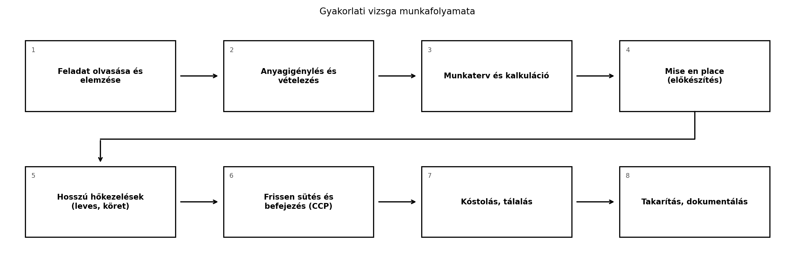

A gyakorlati vizsga a szakács szakma „főpróbája” vagy „bemutatója”. Itt nemcsak az számít, tudsz-e főzni, hanem az is, tudsz-e a konyhában önállóan, tisztán, időre és a vendég elvárásainak megfelelően dolgozni. A vizsgabizottság azt figyeli, milyen leszel a valódi munkahelyen. Aki csak az írásbelit gyakorolja, és a konyhán kapkod, elveszíti a pontjai nagy részét. Ez az alfejezet lépésről lépésre végigvisz egy vizsgaszerű menükészítésen, hogy a vizsga napján ne érjen meglepetés.
Képzeld el a tankonyhát a vizsga reggelén. Megkaptad a feladatodat: „Készítsen 10 adag magyaros menüt: 1. Gulyásleves, 2. Rántott sertésszelet petrezselymes burgonyával, 3. Túrógombóc tejföllel. Rendelkezésre álló idő: 150 perc.” A nyersanyagok a hűtőben és a raktárban várnak. Ha nincs terved, a gulyás félkész marad, a panírozást összepirítod, a gombóc szétfő. Ha van munkaterved, úgy dolgozol, mint egy profi: egyszerre készül a leves, sül a hús, és pihen a gombóc tésztája.
Továbbvitt eredmény. A gyakorlati vizsga ellenőrzőlistája, amelyet a(z) A szakmai vizsga felépítése és az elméleti felkészülés alfejezetben tanultál, itt válik éles feladattá. A vizsga többnyire egy komplett menüsor elkészítése adott nyersanyagból, adott idő alatt. A pontosan kidolgozott munkaterv és az anyagigénylés nem „papírmunka”, hanem a hibátlan kivitelezés terve.
Definíció. A vizsga-munkaterv a gyakorlati vizsgán elvégzendő műveletek időrendbe állított, technológiailag indokolt sorrendje, amely meghatározza, hogy melyik ételt mikor készíted elő, hőkezeled, hűtöd vagy tartod készen, és mikor tálalod.
Szabály. A vizsgán a következő folyamatot kell követned: feladat értelmezése, anyagigénylés és vételezés, munkaterv összeállítása, mise en place, az ételek elkészítése a technológiai sorrendben, tálalás, kóstoló és minőségellenőrzés, takarítás és a dokumentáció átadása.
A munkaterv a gyakorlati vizsga gerince. Ezt mutatod be a vizsgabizottságnak, sokszor a vizsga elején szóban vagy írásban is kérdezik. A tervedben a hosszú hőkezelésekkel kezdj, mert azok önmagukban dolgoznak, amíg te a gyorsabb fogásokat készíted.
Eljárás. A vizsga-munkaterv elkészítése számozott lépésekben:
A visszafelé ütemezés eredménye egy időterv (Gantt-diagram): minden ételnek saját sora van, a vízszintes tengely az idő 9:30-tól 12:00-ig. A teli szürke sávok a figyelmet igénylő műveletek, a sraffozott sávok azok a szakaszok, amikor az étel magától fő, hűl vagy készentartásban vár – ilyenkor dolgozhatsz a következő ételen.
Figyeld meg, hogy a gulyás indul a legkorábban, a panírozás és a sütés az utolsó 25 percre esik, és a teli szürke sávok sehol nem fedik egymást: egyszerre csak egy figyelmet igénylő műveletet végzel. A rombuszok a CCP-ellenőrzések (a sütésnél a maghőmérséklet legalább 75 °C, ellenőrizendő: NÉBIH-útmutató). A HTML-kiadásban a tálalási időpontot és a főzési időket csúszkával állíthatod; a terv visszafelé újraütemeződik, és az ütközés pirosan jelenik meg.

Ez a folyamatábra a vizsga gerincét mutatja. Ha bármelyik doboz kimarad, a végén hiányérzet marad, és pontot veszítesz.
A vizsgán gyakran a megadott nyersanyagokból dolgozol, de lehet, hogy neked kell kiszámítanod a bruttó anyagszükségletet egy adott recept alapján. Ezt a tudást építi fel a(z) Anyaghányad-számítás és receptúra-átszámítás alfejezet. A vizsgán megmutatkozik, hogy az iskolában tanultak nem öncélúak.
Számítás. A vizsgán 10 adagra vonatkoztatsz, ahogyan a technológiai lapokban is tanultad. A képlet:
ahol m_b a bruttó (tisztítatlan) tömeg, m_n
a nettó (tisztított) tömeg, h a hulladékszázalék.
Tegyük fel, hogy 1 adag petrezselymes burgonyához 150 g tisztított burgonyát ír elő a receptúra. A burgonya hámozási és tisztítási vesztesége 20% (tanulási érték, a valóságban a gumó minőségétől függ). Számold ki, mennyi bruttó burgonyát kell kérned a vizsgán 10 adagra.
Figyelem. Az anyagigénylés hibája a vizsgán élelmiszer-hiányhoz vagy pazarláshoz vezet. Mindig a technológiai lap szerint, a kérdezett adagszámra számolj.
A következő gyakorlati útmutató egy teljes vizsgaszerű feladatot mutat be. A példa tanulási célú; a hivatalos vizsgakövetelményt és a portfólió pontos elvárt formáját a vizsgaszabályzat határozza meg (ellenőrizendő: aktuális vizsgaszabályzat).
Cél: 10 adag gulyásleves, rántott sertésszelet petrezselymes burgonyával és túrógombóc elkészítése 150 perc alatt, a HACCP-szabályok betartásával.
Allergének: gulyásleves – zeller (csipetkével glutén és tojás is); rántott sertésszelet – glutén, tojás (tej, ha a tojást tejjel hígítod); petrezselymes burgonya – tej (vaj); túrógombóc – tej, tojás, glutén (ellenőrizendő: 1169/2011/EU II. melléklet, a felhasznált termékek címkéje).
Eszközök és anyagok: - Főzőedények, serpenyő, tepsik, habverő, szűrő, kés, vágódeszka (zöld és piros kód), húsklopfoló, panírozó tálak, maghőmérő, tálalóedények. - Nyersanyagok a technológiai lapok szerint (marhahús, csont, zöldségek, liszt, tojás, zsemlemorzsa, burgonya, petrezselyem, túró, búzadara, tejföl, vaj, cukor, a gombóc morzsájához zsemlemorzsa, fűszerek).
Biztonsági korlát. A bő zsiradékban sütést tankonyhán, oktatói felügyelettel végezd. A gázkészülékek és a forró zsiradék közelében ne rohanj, a panírozott húst a zsiradéktól csendesen helyezd be, ne vesd bele.
Előkészítés (0–40 perc): 1. Higiéniai előkészület. Kézmosás, tiszta kötény, hajháló, a munkafelület fertőtlenítése. 2. Munkaterv bemutatása a vizsgabizottságnak, ha kérik. Kérdésre válaszolj röviden: mi a CCP a hőkezelésnél? (A hús maghőmérséklete.) 3. Áruátvétel és hűtés. Vedd át a nyersanyagokat, ellenőrizd a hőmérsékletet (hűtött hús 0–5 °C között, (ellenőrizendő: NÉBIH-útmutató, üzemi HACCP-terv)), és a FIFO-elvet. 4. Zöldségelőkészítés. A gulyáshoz vágd fel a vöröshagymát, a paprikát, a paradicsomot, a burgonyát, a zöldségeket. 5. Húselőkészítés. A marhahúst vágd kockákra; a sertésszeletet klopfold, az inakat szeld be, hogy sütés közben ne ugorjanak össze. 6. Párolás indítása. A gulyást kezdd el pörköltalapon (zsíron fonnyaszd a hagymát, tedd rá a fokhagymát, köményt, pirospaprikát, majd a húst). Párold, időnként kevés vízzel öntsd fel (pörkölésszerűen), hogy az ízanyagok koncentrálódjanak.
Elkészítés (40–145 perc): 7. Gulyás felöntése. Amikor a hús félpuha, öntsd fel csontlével vagy vízzel, add hozzá a sárgarépát, gyökeret, majd a kockázott burgonyát. Forrald, majd takarékon, lefedve főzd készre. 8. Köret előkészítése. A burgonyát hámozd, mosd, kockázd, és sós vízben főzd készre. Ha a gulyás közben fő, a burgonya is főzhet a másik lángon. A megfőtt burgonyát szűrd le, vajjal és vágott petrezselyemzölddel forgasd át, és tálalásig tartsd legalább 63 °C-on (tanulási érték; ellenőrizendő: NÉBIH-útmutató). 9. Túrógombóc főzése. A túrót áttöröd, tojással, búzadarával elkevered, pihenteted a hűtőben. A bő, gyöngyöző vízben gyöngyöző lángon, lefedés nélkül főzöd. Ha a gombóc feljön a víz felszínére, és még 2–3 percig fő, kész. A gombóc főzése alatt pirítsd aranybarnára a morzsát: vajon vagy zsiradékon, kevés cukorral átforgatott zsemlemorzsát, amelybe a kész gombócot forgatod. 10. Bundázás (kb. 20 perccel a tálalás előtt, közvetlenül a sütés előtt). A klopfolt, sózott, borsozott hússzeleteket forgasd lisztbe, majd tojásba (tejjel vagy vízzel hígítva), végül zsemlemorzsába. A panírt enyhén nyomkodd rá. A panírozott húst a sütésig hűtőben (0–5 °C), papírral bélelt, száraz tálcán tartsd, és csak a sütés előtt vedd ki; közben melegítsd elő a zsiradékot. 11. Kritikus pont. A panírozott sertésszelet vastagabb része legalább 75 °C maghőmérsékletet érje el, a leve tiszta legyen, ne rózsaszín (ellenőrizendő: hatályos NÉBIH-útmutató). Ezt maghőmérővel is mérd. 12. Sütés. A bő zsiradékot hevítsd 170–180 °C-ra. A szeleteket óvatosan, ne zsúfolva süsd, hogy a zsiradék hőmérséklete ne essen le. Ha a zsiradék hője túl alacsony, a panír megszívja magát olajjal.
Tálalás (145–150 perc): 13. Kóstolás. Mielőtt a vendég (vizsgabizottság) elé kerül, tiszta kanállal kóstold a gulyást. Ízesítsd, ha kell. A kóstoláshoz mindig tiszta kanalat használj, és soha ne nyúlj vissza a kóstolókanállal az ételbe. 14. Tálalás. A levest forrón, csészébe; a húst petrezselymes burgonyával, citromgerezddel; a túrógombócot tejföllel. 15. Takarítás. A munkafelületet, az edényeket mosd el, a hulladékot válogasd szét. A zsiradékot ne öntsd a lefolyóba.
A munkahely rendje a vizsgán értékelt szempont. A lenti felülnézeti rajz felső része egy rendezett vizsga-munkaállomást mutat: a munkaterv és az anyagigénylés lapja (1), a kimért alapanyagok tálkákban (2), a színkódolt vágódeszkák – nyers hús, zöldség, kész étel külön (3), a hulladéktál (4), a kéztörlő és a fertőtlenítő (5), a maghőmérő a jegyzőlappal (6), valamint a tiszta tálalóedények külön (7). Az alsó, hibás asztalon a nyers hús és a kész étel egy deszkán van (a), a hulladék a munkalapon marad (b), az eszközök rendezetlenek (c).
A deszkák színkiosztását az üzemi (iskolai) szabály adja; a lényeg, hogy a nyers és a kész étel soha ne kerüljön egy deszkára. A HTML-kiadásban a helyes és a hibás asztal között válthatsz.
A vizsgán a tálalt ételnek nemcsak finomnak, hanem szabályosnak is kell lennie.
Érzékszervi követelmények: - Gulyásleves: élénk pirosas szín, sűrű, jól fűszerezett, a hús puha, a burgonya még nem esik szét. - Rántott szelet: aranybarna, ropogós panír, a hús szaftos, fűszeres. A panír nem válik el a hústól vágáskor. - Petrezselymes burgonya: sárga, vajas, jól sózott, a petrezselyem élénkzöld. - Túrógombóc: a gombóc nem kemény, nem esik szét, az aranybarna morzsában egyenletesen oszlik el.
Mérhető követelmények: - Adagsúly: a leves 250–300 ml, a rántott hús 150–180 g, a köret 150–200 g, a gombóc 3 db/adag (az értékek tanulási célúak, az üzemi recept szerint változnak). - Maghőmérséklet: a panírozott hús maghője legalább 75 °C (ellenőrizendő: hatályos NÉBIH-útmutató). - Higiénia: nincs keresztszennyeződés, a kész étel tálalásig melegen tartva legalább 63 °C-os (tanulási érték), legfeljebb 2 órán át, hűtve 0–5 °C között van (ellenőrizendő: NÉBIH-útmutató, üzemi HACCP-terv; a könyv egységes referenciatáblája).
Hiba: A munkaterv hiányzik vagy nem követhető. - Ok: A tanuló fejből akart dolgozni, nem írta le. - Helyes gyakorlat: Mindig írj munkatervet, mert a vizsgán a stressz úgyis megzavar. A papírra írt terv pontosan mutatja, mi a következő lépés.
Hiba: A gulyás leveses, a hús kemény. - Ok: A húst a vizsgán túl rövid ideig főzte, nem várta meg a pörkölésszerű párolási fázist. - Helyes gyakorlat: A gulyást a technológiai sorrend szerint készítsd: előbb párolás, majd folyadék. Ez a hús megpuhulásához és a jó ízhez nélkülözhetetlen.
Hiba: A rántott szelet panírja leválik, a hús szaftos, de a panír nem szép. - Ok: A panírozott szeleteket a sütésig nedves tálcán pihentette, vagy a zsiradék nem volt elég forró. - Helyes gyakorlat: A panírozott szeleteket ne pihentesd sokáig; ha várnak, hűtőben, száraz, papírral bélelt tálcán tartsd őket. Sütés előtt mindig ellenőrizd a zsiradék hőmérsékletét.
Panni a vizsgán nagyon izgult. A feladata gulyás és rántott hús volt. Az első másfél órában elkészítette a gulyást, de elfelejtette a munkatervét. Amikor a húst kellett volna panírozni, rájött, hogy nincs kész a tojáskeverék. A panírt kapkodva rakta a húsra, a zsiradékot túlhevítette. A hús kívül megégett, belül nyers maradt. A vizsgabizottság a húsnál a nyers maghőmérsékletet (40 °C) mérte. Panni a munkaterv hiánya miatt elbukta a gyakorlati részt, pedig a gulyása finom volt. A tanulság: a terv nélküli gyorsaság élelmiszer-biztonsági hibát okoz, ami minden más pontot felülír.
1. feladat (A) Írd le, mi a vizsga-munkaterv, és miért fontos a gyakorlati vizsgán.
2. feladat (B) Számold ki: a vizsgán 10 adag rántott sertésszeletet készítesz. 1 adag nettó hús: 120 g. A hús tisztítási vesztesége (szélek vágása) 5%. Mennyi bruttó húst kell vételezni?
3. feladat (C) Állítsd össze a teendők sorrendjét a vizsgán, ha a feladat egy húsleves tésztabetéttel, egy rántott hús és egy hideg desszert. Melyiket mennyi idővel a tálalás előtt kezded?
4. feladat (D) A vizsgán a panírozott hús maghőmérséklete 65 °C, a panír viszont már aranybarna. Mi a hiba? Mit teszel, mielőtt tálalnád? (Hiba elemzése: mi okozta, mi a javítás, mi a megelőzés.)
5. feladat (A) Sorold fel a HACCP szempontjából legfontosabb 3 szabályt a gyakorlati vizsgán (pl. hűtés, maghőmérséklet, keresztszennyeződés).
6. feladat (B) A gulyás készen van 11:00-kor, a vizsga tálalási ideje 12:30. Hogyan tárolod a levest? (Hőntartás vagy hűtés? Milyen hőmérsékleten?)
A gyakorlati vizsga a munkaterveddel és a technológiával való profi viszonyt méri. A munkaterv a műveletek írásos, időrendbe állított sora, amely a hosszú hőkezelésekkel kezd, és a frissen sütéssel, tálalással zár. Az anyagigénylésnél bizonyítod a bruttó-nettó számítást; a veszteségszázalékkal számolj, hogy ne legyen hiány. A vizsgán a HACCP-szabályok (maghőmérséklet, hűtés, keresztszennyeződés) betartása önmagában értékelő pont. A tálalás előtt kóstolj, és tartsd a kész ételt a biztonságos hőmérsékleten. A gyakori hibák: kapkodás a sütésnél, hiányos munkaterv, kóstolókanál visszamártása. Az ellenőrzőlista a(z) A szakmai vizsga felépítése és az elméleti felkészülés alfejezet ismétlési tervére épül.